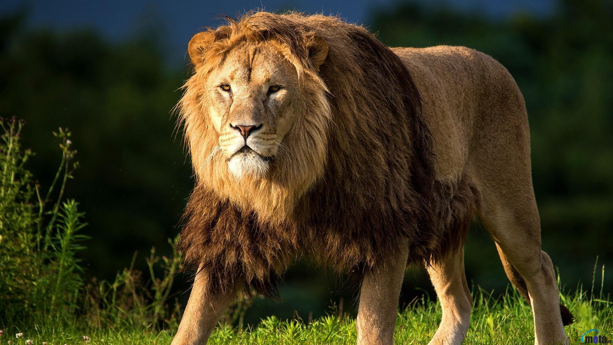

Le Léopard ou la Panthère (Panthera pardus) est une espèce de félins de la sous-famille des panthérinés. Ce félin présente un pelage fauve tacheté de rosettes ; une forme mélanique (la Panthère noire) existe également.
Fiche du Félin
Le Tigre est une espèce de mammifère carnivore de la famille des félidés du genre Panthera. Aisément reconnaissable à sa fourrure rousse rayée de noir, c'est le plus grand félin sauvage et l'un des plus grands carnivores terrestres, dépassé seulement par les plus grandes espèces d'ours
Fiche du Félin
Jadis considérée comme une espèce à part entière, la Panthère Noire est en fait la forme « mélanique » du Léopard. On la trouve essentiellement dans les forêts tropicales d'Inde, de Malaisie et de Java.
Fiche du Félin